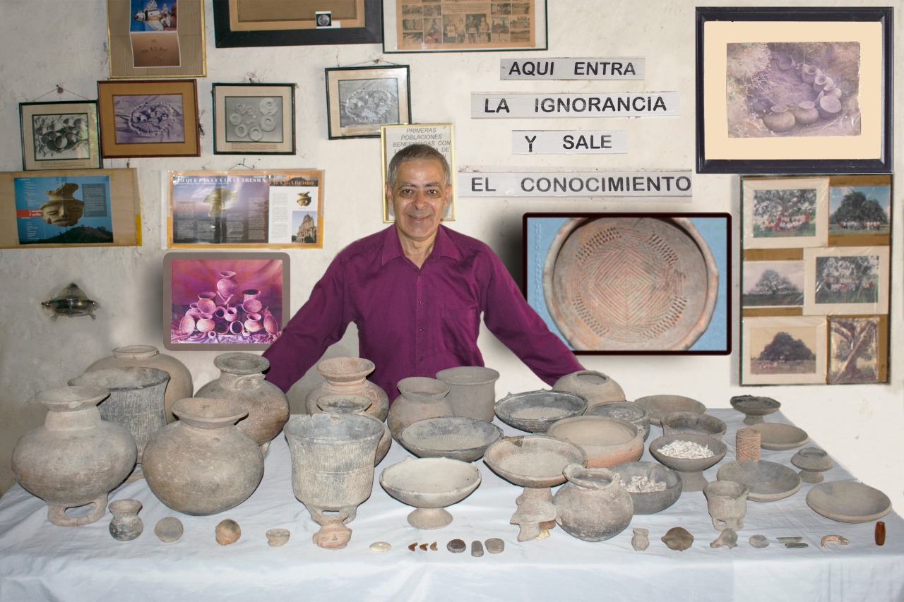
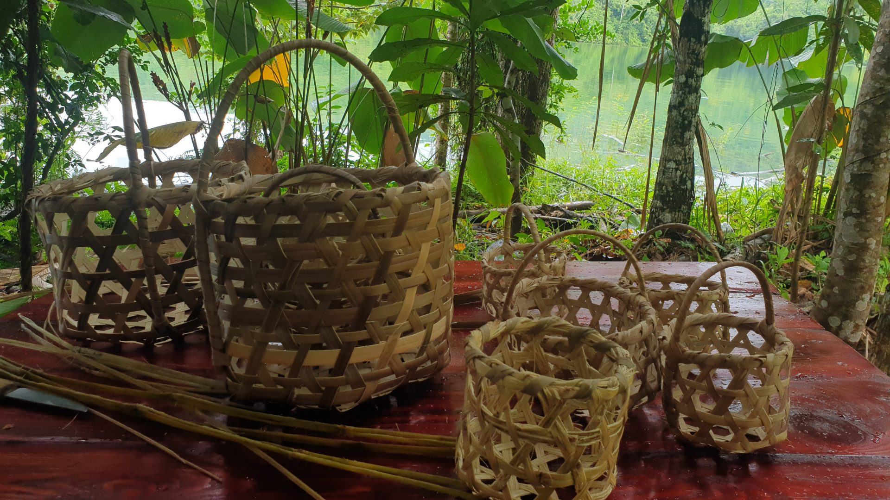
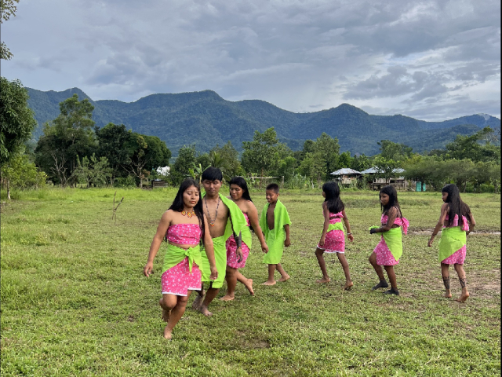

Experience
Tierralta
English
Spanish
The cultural and natural heritage of Tierralta is one of its greatest treasures, as its richness is reflected both in its natural landscapes and in its cultural traditions that have been preserved over time.
Including expressions such as music, dance, gastronomy, crafts, and the archaeological remains of the Zenú culture, these elements allow us to understand the history of the territory and the relationship of its inhabitants with the environment.

This museum is a fundamental space for learning about the history of the region, as it houses an important collection of ceramic pieces made by the Zenú culture, as well as stone tools, bone remains, photographs, and other historical artifacts.

The crafts of the Tierralta area are a living expression of cultural identity, especially those made by the Embera Neka Artisans Association of the Upper Sinú.

The dances of the Embera Katio people are an ancestral tradition that is still preserved today. These cultural expressions are deeply connected to nature, rituals, and the worldview of this indigenous community.